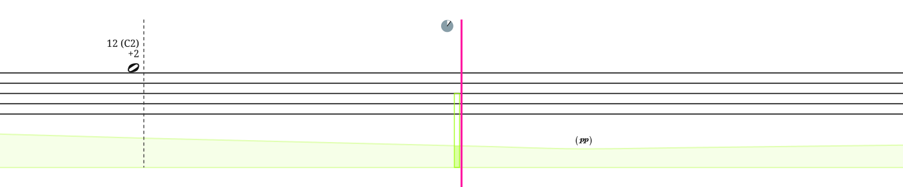

There are a number of animated conduction tools that are intuitive to follow and aid performers in realizing the score.
A scrolling cursor runs throughout the piece at a consistent speed and indicates when things are to be played. Notation is spaced proportionally in time — distance on the page equals duration. Bouncing-ball conductors aid with rhythmic precision. The dotted vertical line — the go-line — marks the go-time for events.
In the first example, you would play the Bartók pizzicato when the scrolling cursor reaches the go-line and the ball bounces. In the second example, you would begin the trill at the go-line and continue it for the length of the green curve — the trill ends where the curve ends.

